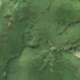
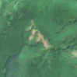

3,2 ha de pădure schimbată lângă Polovragi
Între vara lui 2025 și 27 aprilie 2026, pe aproximativ 3,2 ha de pădure din comuna Polovragi, județul Gorj, imaginile Sentinel-2 arată că vegetația a dispărut sau s-a schimbat puternic. În registrul public există o autorizație de tăiere pentru acest loc.
Autorizația de tăiere
cu autorizație
Parcela autorizată acoperă zona, iar autorizația era valabilă când s-a tăiat.


Înainte și după: Copernicus Sentinel-2, 10 m pe pixel, conturul zonei cu portocaliu. Poza detaliată (Esri World Imagery) e de acum 1–4 ani: arată ce era acolo înainte, nu tăierea.
Pe scurt
- Identificator
- 20260427_45205_23821
- Locul
- comuna Polovragi, județul Gorj (SIRUTA 81380)
- Coordonate (centru)
- 45.20453, 23.82055 · Google Maps · OpenStreetMap
- Suprafața
- 3,2 ha (din pixeli de 10 m; ± câțiva pixeli pe margine)
- Pădurea întreagă
- în vara lui 2025 (de atunci, nori sau iarnă)
- Prima imagine cu schimbarea
- 27 aprilie 2026
- Imagini în care se vede schimbarea
- 8
- Cât de sigur e semnalul din satelit
- medie
- Autorizația cea mai apropiată
- APV 2500191800550 · Ocolul Silvic Polovragi, valabilă 15 ianuarie 2026 – 20 aprilie 2026, la 0 m de zonă
- Terenul
- pădure privată, după amenajamentul silvic publicat
- Arie protejată
- Nordul Gorjului de Est
- Pădure pierdută în jur, alți ani
- 2015, 2017, 2018, 2020 (Hansen)
- Garda Forestieră
- Râmnicu Vâlcea
Dacă vrei să verifici sau să sesizezi
- Pădurile din județul Gorj sunt în grija Gărzii Forestiere Râmnicu Vâlcea, care controlează tăierile și dă amenzile.
- Autorizația găsită în zonă e emisă de Ocolul Silvic Polovragi.
- Formularul Gărzii Forestiere Naționale primește sesizări și fără nume. Trimite linkul acestei pagini, coordonatele și pozele. Dacă tăierea e în desfășurare, sună la 112.
- Autorizațiile și transporturile de lemn se pot căuta în Inspectorul Pădurii.
Pagina arată ce se vede din satelit și ce scrie în registrul public; nu e o dovadă în sine.
Din alte surse
- presă (probabilă): Știre despre tăieri la Polovragi, Gorj, 29.06.2026: „Gorj: Zece zile de creație la Polovragi, la Tabăra de sculptură 'Simboluri dacice în arta lemnului din România' - Agerpres” Nu e sigur că e vorba de aceeași tăiere. sursa
- presă (probabilă): Știre despre tăieri la Polovragi, Gorj, 09.07.2026: „Bucate tradiționale și sculpturi în lemn, atracțiile weekendului la Polovragi - Radio România Oltenia” Nu e sigur că e vorba de aceeași tăiere. sursa
- presă (probabilă): Știre despre tăieri la Polovragi, Gorj, 27.08.2026: „Un pădurar din Polovragi, cercetat pentru tentativă de furt de arbori. Lemnul, scos din pădure cu tractorul - Gazeta de Sud” Nu e sigur că e vorba de aceeași tăiere. sursa
- presă (probabilă): Știre despre tăieri la Polovragi, Gorj, 12.07.2026: „VIDEO: Mâncăruri tradiționale, daci și sculpturi în lemn, la Polovragi - GorjOnline” Nu e sigur că e vorba de aceeași tăiere. sursa
- presă (probabilă): Știre despre tăieri la Polovragi, Gorj, 02.07.2026: „S-a deschis tabăra de sculptură în lemn, ediția a IX-a de la Polovragi! Prefectul și șefii instituțiilor culturale, alături de primarul Epur” Nu e sigur că e vorba de aceeași tăiere. sursa
Cum citezi zona
Linkul acestei pagini nu se schimbă. Dacă zona iese vreodată de pe hartă, pagina rămâne, cu data și cu ce știam despre ea.
Pădurea RO, zona 20260427_45205_23821: 3,2 ha, comuna Polovragi, județul Gorj; schimbare văzută din satelit între vara lui 2025 și 27 aprilie 2026. https://iliemihai.github.io/padurea-ro/zona/20260427_45205_23821/ (consultat la [data]). Date: CC BY 4.0.
Datele zonei: GeoJSON · toate zonele: date deschise · licența CC BY 4.0.
Istoricul zonei pe hartă
Starea se poate schimba când registrul publică o autorizație sau când analistul vede poze mai bune. O ținem aici, ca un link citat să arate și ce spuneam atunci.
Pe hartă cel târziu din 5 noiembrie 2026.
- 5 noiembrie 2026 – azi · cu autorizație
Detalii tehnice, pentru verificare
De ce acest nivel de încredere:
- văzută schimbată în 8 imagini diferite
- peste 3 ha
- pădurea din jur e neschimbată
- ultima dată am văzut-o intactă în vara lui 2025 (de atunci, nori sau zăpadă)
- fără părerea AI
- Placa Sentinel-2
- 34TGR
- NDVI de referință
- 0.83
- NBR de referință
- 0.55
- Scăderea în pădurea din jur
- 0.03
- Persistență
- 1.0
- NDVI / NBR după
- 0.468 / 0.201
Cum se calculează fiecare: metodologia.
Pune harta zonei într-un articol
Copiază codul în articol (merge în majoritatea site-urilor de știri). Sau pune doar linkul: WhatsApp, Facebook și X arată singure poza zonei.